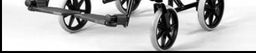
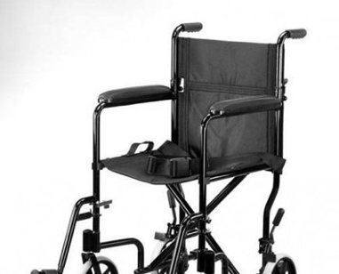
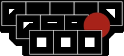
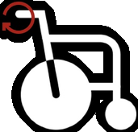

SUMMARY


The Medline Steel Transport wheelchair is designed to transport people who have mobility limitations.
It has 2 distinct users:
People with
mobility limitation
Caregivers
Objective
We assesess the wheelchair’s ability to properly support its user and be operated by the attendant and suggest design
recommendations for the gaps. The analysis and design recommendations are based on adult Anthropometry
Anthropometry = Study of measurement & proportions of human body

Process
Identifyyour specificpopulation
Determine thekey parametersof the wheelchair.Measure them.
Refer anthropometric
databases to findcorrect ergonomicmeasures for chosen
population
Find mismatches
in design and
measurements
Suggest design
recommendations,
prioritization &
trade-offs
WHEELCHAIR DETAILS

Heuristics
Seat to back angle
Handle Diameter
Seat Angle
Handle Length
Backrest Height
Seat Depth
Push handle Height
Heuristics for
Wheelchair
Armrest Height
Seat Height
Seat Width
Distance between handles
| Type of user | Key parameters | Measurements |
| End-user | Seat width | 40.64 cm |
| Seat depth | 43.18 cm | |
| Seat height | 48.26 cm | |
| Backrest height | 45.72 cm | |
| Seat to back angle | 92° | |
| Seat angle | 6° | |
| Armrest height | 25.4 cm | |
| Caregiver | Push handle height | 97.80 cm |
| Distance between handles | 40.89 cm | |
| Handle diameter | 3 cm | |
| Handle length | 11 cm |
Current measures
These are current wheelchair dimension:
USER GROUP
Population: American men & women
Range: 25th to 75th percentile
Measurements: CAESAR database (Civilian American and European Surface Anthropometry Resource )
In general, men had higher values of measure (for 25th, 50th as well as 75th percentile) as compared to women. Only for hip
width measure did women have higher values than men. Thus, for the current analysis, we choose:
25th
percentile
American woman
25th
percentile
American woman
75th
percentile
American man
75th
percentile
American man
Measures NOT involving Hip-Width
Measures involving Hip-Width
| CAESAR DATABASE | ||||||
| Key dimensions | Wheelchair measurements (cm) | Anthropometric dimensions associated | Mean for American (cm) | Standard deviation (cm) | Z | Percentile |
| Seat width | 40.64 | Hip breadth sitting | 39.5 | 4.39 | 0.259681 | 60.24 |
| Seat height | 48.26 | Knee height | 47 | 3.79 | 0.33245 | 63.02* |
| Backrest height | 45.72 | Acrimonial height sitting | 58.6 | 3.75 | -3,43467 | 0.02 |
| Armrest height | 25.4 | Elbow sitting height | 23.8 | 5.35 | 0.299065 | 61.75** |
| Push handle height | 97.80 | Elbow standing height | 109.5 | 6.98 | -1,676218 | 4.68 |
*: For the seat height, the current dimension is higher than the mean and is equal to the 63.02th percentile. In other words, it means that for the people below the 63.02th percentile, it is inconvenient for them to sit easily on the wheelchair
** : As the armrest height is higher than the mean, it means that for 61.75th percentile, the armrests may be too high
User dimensions
For this assessment, two databases have been used : CAESAR and ANSUR. As CAESAR database is the most recent one, it has been
used for almost all dimensions. ANSUR has been used for dimensions that have not been covered by CAESAR. For the key
dimensions that are not directly linked to an anatomical measurement, a range of optimal dimensions has been indicated.
| ANSUR DATABASE | |||||
| Key dimensions | Wheelchair measurements (cm) | Anthropometric dimensions associated | 25th percentile women | Mean for American | 75th percentile men |
| Seat depth | 43.18 | Buttock-Popliteal length | 46.3 | 48.75 | 51.7 |
| Seat height | 48.26 | Popliteal height | 37.3 | 41.1 | 45.1 |
| Distance between handles | 40.89 | Shoulder breadth | 40.56 | 46 | 51.95 |
| Handle length | 11 | Hand breadth | 7.7 | 8.05 | 9.3 |
| BASED ON RESEARCH | ||
| Key dimensions | Wheelchair measurements | Range of optimal dimension based on research |
| Handle diameter | 2.8 cm | 3 cm - 5 cm for grip power [8] [9] |
| Seat to back angle | 92° | 90° - 110° [2] [4] [5] [7] |
| Seat angle | 6° | 1°- 3° [1] [4] [6] |
ANALYSIS & RECOMMENDATIONS
| Key parameters | Measurements | Match/Mismatch | Recommended value |
| Seat width | 40.64 cm | Mismatch | 43.67 cm |
| Seat depth | 43.18 cm | Match | 43.18 cm |
| Seat height | 48.26 cm | Mismatch | 42.5 cm |
| Backrest height | 45.72 cm | Match | 45.72 cm |
| Seat to back angle | 92° | Match | 92° |
| Seat angle | 6° | Mismatch | 3°, or adjustable 0-6° |
| Armrest height | 25.4 cm | Mismatch | 21.5 cm |
| Push handle height | 97.80 cm | Mismatch | 109.5 cm - 110.1 cm |
| Distance between handles | 40.89 cm | Mismatch | 44 cm |
| Handle diameter | 3 cm | Match | 3 cm |
| Handle length | 11 cm | Match | 11 cm |
Summary
Here is the summary of our findings:
Our prioritization is based on two considerations:• one is the usability of the chair, which includes whether the current dimension is accommodating majority of the users, and the• other is the risks of the parameter, which includes whether the current dimension is causing any major pains to the users.
Following are our recommendations for parameters with mismatch:
Seat Width
We recommend the seat width to accommodate 75th percentile of women to include majority of people’s
hip width. Without making such changes, people may not be able to sit on the wheelchair, which is why wehave prioritized seat width to be the top priority to immediately implement our recommendation of43.67 cm.
Push handle Height
We recommend push handle height to be 110 cm to cover the 75th percentile female and 25th
percentile male. The current dimension is too low for the male elbow standing height and, as mentioned,
can risk a low back pain when pushing the wheelchair. Hence, like seat width, we assigned adjusting the
push handle height to a high priority.
Seat Height
The current seat height is too high to sit easily for the 75th female percentile. By decreasing the seat height,
it may be become too low for male with longer legs, which can cause discomfort when sitting down on
the seat surface. However, such discomfort does not exist after the user puts his or her feet on the
footrest, and thus, the priority is the lowest. The best trade-off would making the seat height adjustable to
42.5 cm to 52.2 cm as explained previously.
Armrest Height
We recommend the armrest height to be 21.5 cm to accommodate majority of target users and be higher
than female’s 75th percentile elbow sitting height. The current measurement is high and can cause
discomfort in the arms. This may apply to majority of the male population as seen from our calculation, and
thus, we have placed it in 4rd in the priority.
Seat Angle
We recommend the seat angle to be around 3 degrees, with a possible adjustment between 0 and 6
degrees as seen in a research paper [1]. The current seat angle of 6 degree, which is in the range, but if
possible, the seat angle should be around 3 degrees for the best comfort. The higher angle can increase the
pressure on buttocks after sitting for a long period, which is a small concern compared to the rest.
Distance between handles
We recommend distance to be 44 cm using shoulder breadth and concluding that the parameter value
should not be large so that users with small shoulder breadth won’t be obstructed. However, this relies on
users’ preference and the range is discovered to be between 40.56 cm to 51.95 cm, which does include
the current dimension. Hence, we assigned priority as the least.